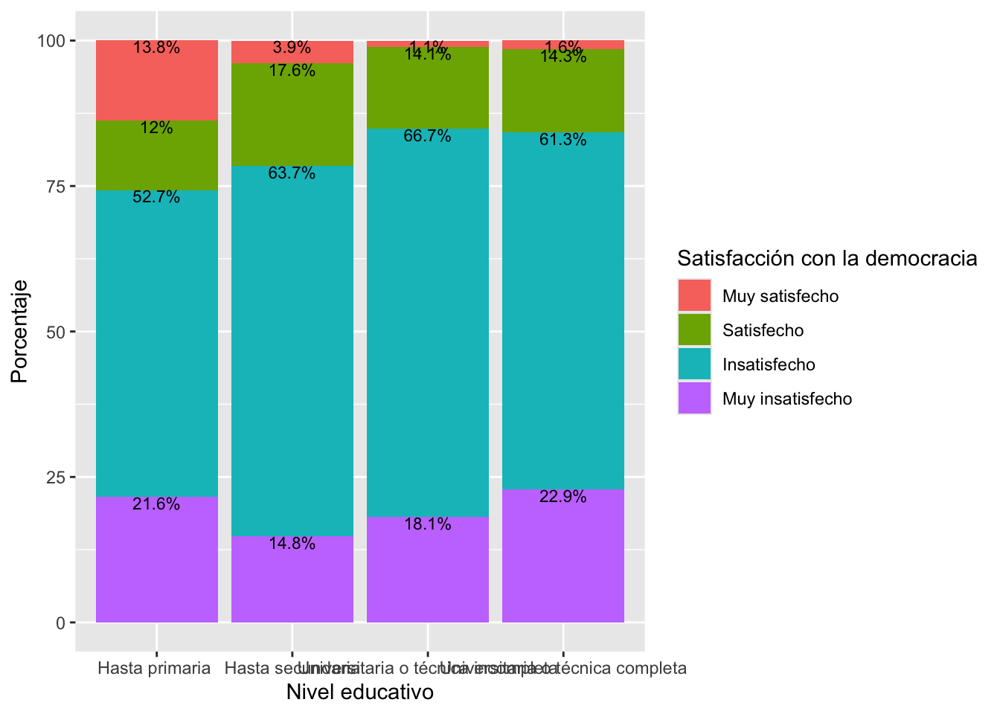

Introducción
La prueba t y la prueba de ANOVA analiza el impacto de una variable
independiente categórica en una variable dependiente numérica. El paso
que vamos a dar en esta sección es analizar la relación
bivariada entre dos variables de factor (o categóricas). Esta
evaluación se realiza mediante la prueba de chi-cuadrado.
Chi-cuadrado:
Variable independiente (país) -> Variable dependiente (apoyo a
la democracia).
Variable independiente (situación económica) -> Variable
dependiente (satisfacción con la vida)
Variable independiente(nivel educativo) -> Variable
dependiente (satisfacción con la democracia)
Tablas de contingencia
Se trata de tablas de doble entrada (como mínimo) para analizar los
datos de variables categóricas. Una variable va en las filas y otra en
las columnas. Se puede tener los totales por filas o por columnas, que
se llaman “distribuciones marginales” y que coinciden con la
distribución de la variable individual.
Se puede calcular porcentajes de 3 maneras:
Se recomienda que la variable independiente sea colocada en las
columnas y la variable dependiente en las filas. Si se calcula los
porcentajes por columnas de esta manera, se podrá comparar las
distribuciones condicionales de la variable dependiente por cada grupo
de la variable independiente.
En este documento vamos a trabajar con el reporte comparado El
Pulso de la Democracia, disponible aquí.
Este reporte presenta los principales hallazgos del proyecto del
Barómetro de las Américas, organizado por el Proyecto de Opinión Pública
en América Latina (LAPOP, por sus siglas en
inglés). En este documento se reportan los resultados de la última ronda
disponible de 2023.
Pueden descargar los datos de manera libre aquí.](http://datasets.americasbarometer.org/database/login.php).)
En este enlace, se pueden registrar o entrar como “Free User”. En el
buscador, se puede ingresar el texto “2023”. Ahí se tendrá acceso a las
bases de datos completas de la ronda 2021 y de todas las rondas de cada
país en versión para STATA. Se descarga la base de datos en formato
.dta. Una vez descargada y guardada en el directorio de trabajo, se
tiene que leer la base de datos como un objeto dataframe en R. El
cuestionario de esta base de datos puede ser visto en este enlace.
library(rio)
peru23 = import("bases/PER_2023_LAPOP_AmericasBarometer_v1.0_w.sav")
Desde la pag. 20 del reporte se hace una evaluación de la democracia
en la práctica. En particular, se trabaja con la variable PN4. En
general, ¿usted diría que está muy satisfecho(a), satisfecho(a),
insatisfecho(a) o muy insatisfecho(a) con la forma en que la democracia
funciona en Perú. El reporte se indica que los datos se recodifican en
una variable dicotómica. En este documento vamos a trabajar con la
variable original. Esta variable es una variable categórica, ordinal o
de factor. En el Gráfico 1.14 del reporte se presenta una evaluación de
la satisfacción con la democracia por variables demográficas y
socioeconómica, como nivel educativo, quintiles de riqueza, lugar de
residencia, género o grupos de edad. Es decir, se usa la satisfacción
con la democracia como variable dependiente y a cada variable
demográficas y socioeconómica como variables independientes.
Por ejemplo, se reporta que entre los hombres, el 42.3% están
satisfechos con la democracia, mientras que entre las mujeres, este
porcentaje disminuye a 36.9%.
Antes de proceder, tenemos que recodificar las variables, ponerlas en
forma de factor y etiquetar.
library(tidyverse)
peru23 = peru23 |>
mutate(sexo = factor(q1tc_r, labels=c("Hombre", "Mujer")))
table(peru23$sexo)
##
## Hombre Mujer
## 769 761
Lo mismo para la variable PN4 que se transforma en la variable
“satis”.
peru23 = peru23 |>
mutate(satis = factor(pn4, labels= c("Muy satisfecho", "Satisfecho",
"Insatisfecho", "Muy insatisfecho")))
tabla1 = table(peru23$satis)
tabla1
##
## Muy satisfecho Satisfecho Insatisfecho Muy insatisfecho
## 58 233 944 280
Para calcular la tabla de satisfacción con la democracia,
independiente del género de la persona, se puede calcular los
porcentajes de esta variable con el comando prop.table. Se
multuplica por 100 para tener el formato de porcentaje.
tabla1 |>
prop.table()*100
##
## Muy satisfecho Satisfecho Insatisfecho Muy insatisfecho
## 3.828383 15.379538 62.310231 18.481848
Ahora, se puede calcular la tabla de contingencia entre satisfacción
y género. El comando table nos brinda las frecuencias
absolutas del cruce entre ambas variables. La variable dependiente
“satisfacción con la democracia” se ubica en las filas y la variable
independiente “sexo” en las columnas. Se verifica que las 58
observaciones que están muy satisfechas con la democracia, se dividen en
27 hombres y 29 mujeres.
tabla2 = table(peru23$satis, peru23$sexo)
tabla2
##
## Hombre Mujer
## Muy satisfecho 27 29
## Satisfecho 132 101
## Insatisfecho 456 485
## Muy insatisfecho 148 132
Para calcular las frecuencias relativas, se tiene que usar el comando
prop.table. Se agrega la especificación (2)
para indicar que se quiere las proporciones sobre las columnas. Se sigue
con el comando round para eliminar los decimales
innecesarios y finalmente se usa addmargins para verificar
la suma de proporciones sobre las columnas.
tabla3 = tabla2 |>
prop.table(2)|>
round(3)*100
tabla3
##
## Hombre Mujer
## Muy satisfecho 3.5 3.9
## Satisfecho 17.3 13.5
## Insatisfecho 59.8 64.9
## Muy insatisfecho 19.4 17.7
En esta tabla se muestra las distribuciones condicionales de
satisfacción con la democracia por cada grupo de género. Por ejemplo, el
3.5% de los hombres se encuentras muy satisfechos con la democracia, un
porcentaje algo similar al 3.9% de las mujeres. El 17.3% de los hombres
se encuentran satisfechos con la democracia, 4 puntos porcentuales por
encima que las mujeres.
De esta manera, se pueden comparar los porcentajes por cada categoría
de la variable dependiente entre grupos de la variable independiente y,
además, se puede comparar con los porcentajes no condicionales de la
variable satisfacción con la democracia.
peru23 = peru23 |>
mutate(protesta = factor(prot3, labels= c("Sí ha participado",
"No ha participado")))
tabla4 = table(peru23$protesta, peru23$sexo)
tabla4 = tabla4 |>
prop.table(2)|>
round(3)*100
tabla4
##
## Hombre Mujer
## Sí ha participado 13.3 10.2
## No ha participado 86.7 89.8
prueba2 = chisq.test(peru23$protesta, peru23$sexo)
prueba2
##
## Pearson's Chi-squared test with Yates' continuity correction
##
## data: peru23$protesta and peru23$sexo
## X-squared = 3.0967, df = 1, p-value = 0.07845
peru23 = peru23 |>
mutate(urbano = factor(ur, labels= c("Urbano", "Rural")))
tabla5 = table(peru23$protesta, peru23$urbano)
tabla5 = tabla5 |>
prop.table(2)|>
round(3)*100
tabla5
##
## Urbano Rural
## Sí ha participado 10.4 16.1
## No ha participado 89.6 83.9
prueba3 = chisq.test(peru23$protesta, peru23$urbano)
prueba3
##
## Pearson's Chi-squared test with Yates' continuity correction
##
## data: peru23$protesta and peru23$urbano
## X-squared = 8.1579, df = 1, p-value = 0.004287
Gráficos bivariados categóricos
Para crear un gráfico se tiene que guardar la tabla como un
dataframe. Se usa el comando as.data.frame para salvar los
porcentajes y poder usarlos con el comando ggplot. Nótese
que el dataframe guarda los porcentajes en otro formato.
tabla4 = as.data.frame(tabla3)
tabla4
## Var1 Var2 Freq
## 1 Muy satisfecho Hombre 3.5
## 2 Satisfecho Hombre 17.3
## 3 Insatisfecho Hombre 59.8
## 4 Muy insatisfecho Hombre 19.4
## 5 Muy satisfecho Mujer 3.9
## 6 Satisfecho Mujer 13.5
## 7 Insatisfecho Mujer 64.9
## 8 Muy insatisfecho Mujer 17.7
En este caso, como tenemos 4 categorías para satisfacción con la
democracia y otras 2 para sexo, un gráfico de barras separadas crearía 8
barras.
library(ggplot2)
ggplot(data=tabla4, aes(x=Var1, y=Freq, fill=Var2))+
geom_bar(position = "dodge", stat="identity")+
geom_text(aes(label=paste(Freq, "%", sep="")),
position = position_dodge(width = 0.9),
vjust=0, size = 3)+
labs(x="Satisfacción con la democracia", y="Porcentaje", fill="Sexo")

Esta forma de graficar puede complicar la comparación en algunos
casos. Por eso, en otros casos, se prefiere el tipo de barras
apiladas.
ggplot(data=tabla4, aes(x=Var2, y=Freq, fill=Var1))+
geom_bar(position="stack", stat="identity")+
geom_text(aes(label=paste(Freq, "%", sep="")),
position = position_stack(), vjust=1, size = 3)+
labs(x="Sexo", y="Porcentaje", fill="Satisfacción con la democracia")

Independencia y dependencia
Decimos que dos variables categóricas son
estadísticamente independientes si las
distribuciones condicionales (poblacionales) son idénticas por cada
categoría de la variable independiente. Por ejemplo, la siguiente tabla,
si mostrara los porcentajes poblacionales condicionales, estos son
idénticos entre grupos de la variable independiente. Es decir,
independientemente de ser hombre o mujer, las distribución de
satisfacción por la democracia es la misma. Ser hombre o mujer no cambia
nada las opiniones con respecto a la satisfacción con la democracia.
| Muy satisfecho |
3.5% |
3.9% |
| Satisfecho |
17.3% |
13.5% |
| Insatisfecho |
59.8% |
64.9% |
| Muy insatisfecho |
19.4% |
17.7% |
VI: fuma ———> VD: cáncer de pulmón
| Cáncer al pulmón |
Fumador |
No fumador |
| Si desarrolla cáncer |
10 |
10 |
| No desarrolla cáncer |
90 |
90 |
| Total |
100% |
100% |
A medida que estos porcentajes difieren más entre sí, hay más
probabilidades que ambas variables estén relacionadas. En realidad, a
medida que estos porcentajes difieren más de la distribución no
condicional de la variable satisfacción con la democracia también habría
una mayor probabilidad de que estén relacionadas.
Prueba de independencia de chi-cuadrado
Se basa en la comparación de las frecuencias observadas (las
observaciones que se recoge en campo) versus las frecuencias esperadas
(las observaciones que debería haber en cada celda de la tabla si las
variables fueran independientes). En ese sentido \(H_0: f_e = f_o\) o lo que es lo mismo que
las variables son independientes.
Si no hubiera relación entre las variables, tendríamos los mismo
porcentajes reproducidos en las distribuciones condicionales.
| MS |
2.1% de hombres -> #observaciones si no hay relación
cuánto es el 2.1% de 1617 = 34 -> #obs si NO hubiera relación
Pero, 19 es lo realmente observado
(19-34)^2 |
2.1% de mujeres -> #observaciones si no hay relación
cuánto es el 2.1% de 1421 = 29.8 -> #obs si NO hubiera
relación
Pero, 12 es lo realmente observado
(12-29.8)^2 |
| S |
18.6% |
18.6% |
| I |
61.3% |
61.3% |
| MI |
18% |
18% |
|
100% |
100% |
Prueba estadística
El chi-cuadrado resume qué tan cerca están las frecuencias esperadas
de las frecuencias observadas. Mientras más pequeña la distancia en cada
celda, menos probabilidades de rechazar la hipótesis nula. Mientras la
distancia más grande en cada celda ,más probabilidades de rechazar la
hipótesis nula.
\[
\chi^2 = \sum\frac{(f_o-f_e)^2}{f_e}
\]
Si fo=fe en cada celda, entonces χ^2 = 0
Con el valor de \(\chi^2\) se
calcula un p-value, que tiene que ser menor de 0.05 para rechazar la
Ho.
Se requiere que haya al menos 5 observaciones en cada
celda
En R se usa el comando chisq.test para calcular el
estadístico y el p-value. Esta prueba es mejor guardarla en un objeto
nuevo
prueba = chisq.test(peru23$satis, peru23$sexo)
La primera tabla presenta las frecuencias observadas, que es lo que
realmente se recoge en campo. La segunda tabla presenta las frecuencias
esperadas (si no hubiera relación). Se comprueba los cálculos que se
hizo en la tabla anterior (las diferencias son debido a la aproximación
decimal).
El estadístico \(\chi^2\) resume las
diferencias entre las frecuencias observadas y esperadas en cada celda y
las suma de acuerdo a la fórmula.
prueba
##
## Pearson's Chi-squared test
##
## data: peru23$satis and peru23$sexo
## X-squared = 5.835, df = 3, p-value = 0.1199
La prueba nos da como resultado un p-value = 0.12, por lo que NO se
puede rechazar la hipótesis nula y se concluye que no sabemos si existe
asociación/relación/dependencia entre las variables.
Tabla cruzada de satisfacción con la democracia según nivel
educativo
El Gráfico 1.14 del reporte muestra los datos de satisfacción con la
democracia (según la variable recodificada dummy) por niveles educativo.
Como segundo ejemplo, aquí vamos a replicar esa relación usando la
variable original de tipo factor para Perú 2023.
Vamos a recodificar la variable educación. La variable original
“edre” separa los niveles educativos en 7 niveles (del 0 al 6). Los
analfabetos son un grupo muy pequeño y podrían causar problemas.
Primero, creamos una variable “educ”, como el factor de “edre”.
Luego, se etiqueta.
peru23 = peru23 |>
mutate(educ = factor(edre, labels=c("Analfabeto", "Primaria incompleta",
"Primaria completa","Secundaria incompleta",
"Secundaria completa",
"Universitaria o técnica incompleta",
"Universitaria o técnica completa")))
table(peru23$educ)
##
## Analfabeto Primaria incompleta
## 8 80
## Primaria completa Secundaria incompleta
## 90 133
## Secundaria completa Universitaria o técnica incompleta
## 511 270
## Universitaria o técnica completa
## 443
Vamos a crear otra variable de educación “educ2” que junte categorías
para que no hayan 7 niveles educativos.
peru23 = peru23 |>
mutate(educ2= case_when(
edre == 0 ~ 1,
edre == 1 ~ 1,
edre == 2 ~ 1,
edre == 3 ~ 2,
edre == 4 ~ 2,
edre == 5 ~ 3,
edre == 6 ~ 4,
))
peru23 = peru23 |>
mutate(educ2 = factor(educ2, labels=c("Hasta primaria ", "Hasta secundaria",
"Universitaria o técnica incompleta",
"Universitaria o técnica completa")))
table(peru23$educ2)
##
## Hasta primaria Hasta secundaria
## 178 644
## Universitaria o técnica incompleta Universitaria o técnica completa
## 270 443
Con la variable recodificada se puede calcular la tabla cruzada de
satisfacción con la democracia según niveles educativos.
tabla4 = table(peru23$satis, peru23$educ2)
tabla4
##
## Hasta primaria Hasta secundaria
## Muy satisfecho 23 25
## Satisfecho 20 112
## Insatisfecho 88 405
## Muy insatisfecho 36 94
##
## Universitaria o técnica incompleta
## Muy satisfecho 3
## Satisfecho 38
## Insatisfecho 180
## Muy insatisfecho 49
##
## Universitaria o técnica completa
## Muy satisfecho 7
## Satisfecho 63
## Insatisfecho 271
## Muy insatisfecho 101
tabla4 = tabla4 |>
prop.table(2) |>
round(3)*100
tabla4
##
## Hasta primaria Hasta secundaria
## Muy satisfecho 13.8 3.9
## Satisfecho 12.0 17.6
## Insatisfecho 52.7 63.7
## Muy insatisfecho 21.6 14.8
##
## Universitaria o técnica incompleta
## Muy satisfecho 1.1
## Satisfecho 14.1
## Insatisfecho 66.7
## Muy insatisfecho 18.1
##
## Universitaria o técnica completa
## Muy satisfecho 1.6
## Satisfecho 14.3
## Insatisfecho 61.3
## Muy insatisfecho 22.9
Gráfico bivariado de satisfacción con la democracia según
educación
tabla5 = as.data.frame(tabla4)
tabla5
## Var1 Var2 Freq
## 1 Muy satisfecho Hasta primaria 13.8
## 2 Satisfecho Hasta primaria 12.0
## 3 Insatisfecho Hasta primaria 52.7
## 4 Muy insatisfecho Hasta primaria 21.6
## 5 Muy satisfecho Hasta secundaria 3.9
## 6 Satisfecho Hasta secundaria 17.6
## 7 Insatisfecho Hasta secundaria 63.7
## 8 Muy insatisfecho Hasta secundaria 14.8
## 9 Muy satisfecho Universitaria o técnica incompleta 1.1
## 10 Satisfecho Universitaria o técnica incompleta 14.1
## 11 Insatisfecho Universitaria o técnica incompleta 66.7
## 12 Muy insatisfecho Universitaria o técnica incompleta 18.1
## 13 Muy satisfecho Universitaria o técnica completa 1.6
## 14 Satisfecho Universitaria o técnica completa 14.3
## 15 Insatisfecho Universitaria o técnica completa 61.3
## 16 Muy insatisfecho Universitaria o técnica completa 22.9
ggplot(data=tabla5, aes(x=Var2, y=Freq, fill=Var1))+
geom_bar(position="stack", stat="identity")+
geom_text(aes(label=paste(Freq, "%", sep="")),
position = position_stack(), vjust=1, size = 3)+
labs(x="Nivel educativo", y="Porcentaje",
fill="Satisfacción con la democracia")

Prueba estadística entre satisfacción con la democracia según
educación
Para comprobar la relación entre estas variables, también se puede
usar la prueba de independencia de \(\chi^2\). Esta evaluación se guarda en un
objeto “prueba2”.
prueba2 = chisq.test(peru23$satis, peru23$educ2)
prueba2
##
## Pearson's Chi-squared test
##
## data: peru23$satis and peru23$educ2
## X-squared = 71.87, df = 9, p-value = 6.539e-12
prueba2 = chisq.test(peru23$satis, peru23$educ2)
prueba2
##
## Pearson's Chi-squared test
##
## data: peru23$satis and peru23$educ2
## X-squared = 71.87, df = 9, p-value = 6.539e-12
Con el valor de estadístico se obtiene un p-value menor a 0.05, con
lo que se rechaza la hipótesis nula y se afirma que las frecuencias
observadas son diferentes de las esperadas, con lo que concluimos que sí
existe una relación de dependencia entre las variables. Esto quiere
decir que en Perú en 2023 existen diferencias en la satisfacción con la
democracia entre diferentes grupos por nivel educativo.
